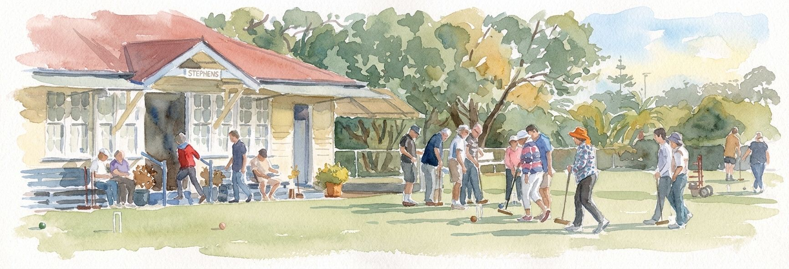
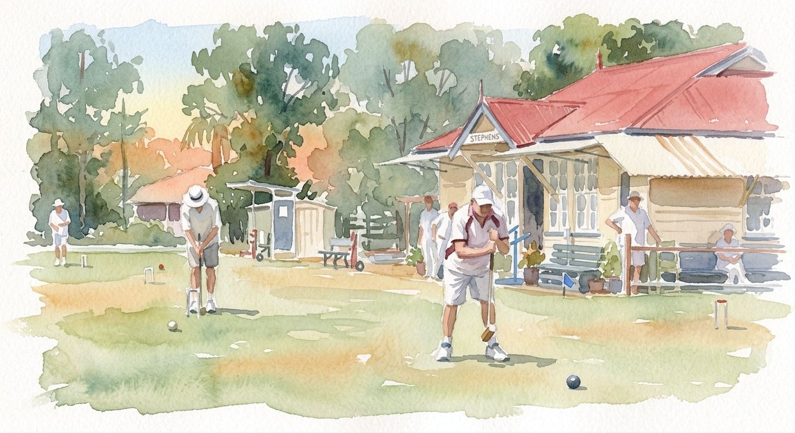
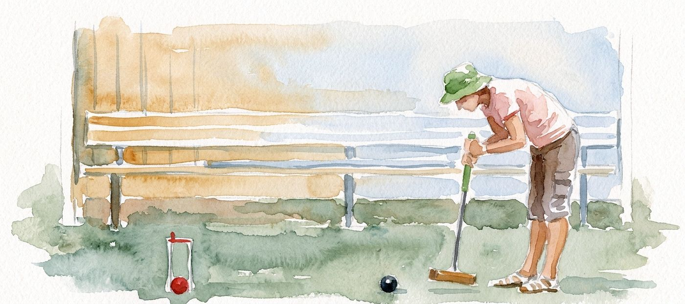
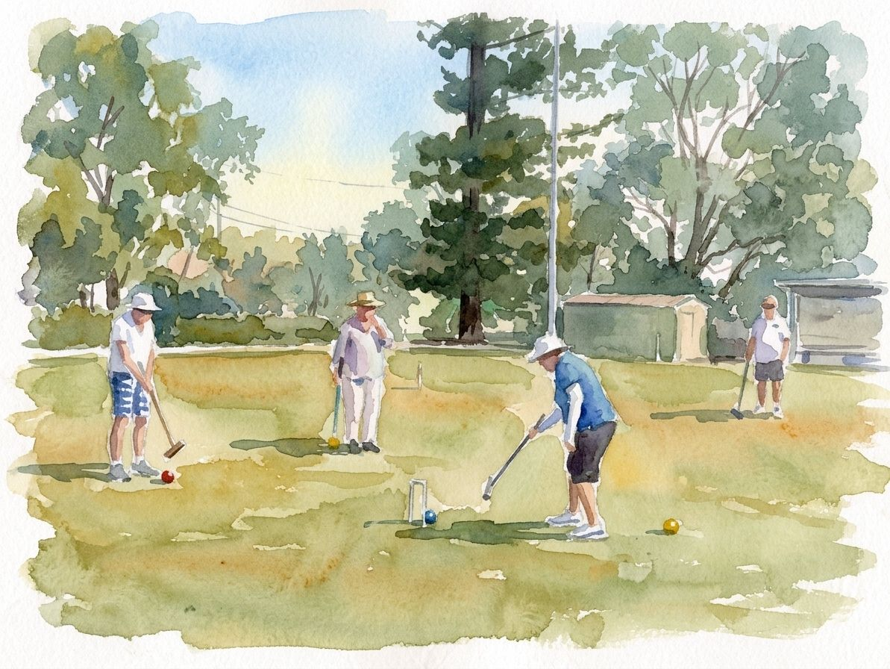
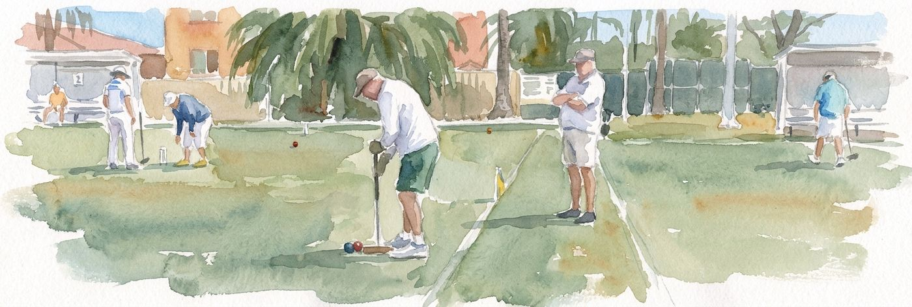
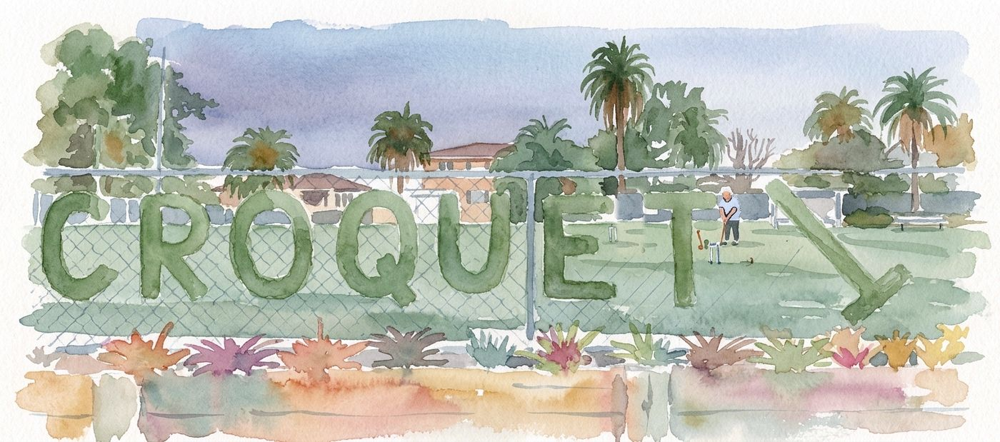

Gallery
A collection of photos from around the club: the lawns, the clubhouse, and members enjoying croquet at Yeronga Park.
Every picture here is a watercolour, painted from a photo taken at the club. Have a good photo of Stephens? Email it to us.











